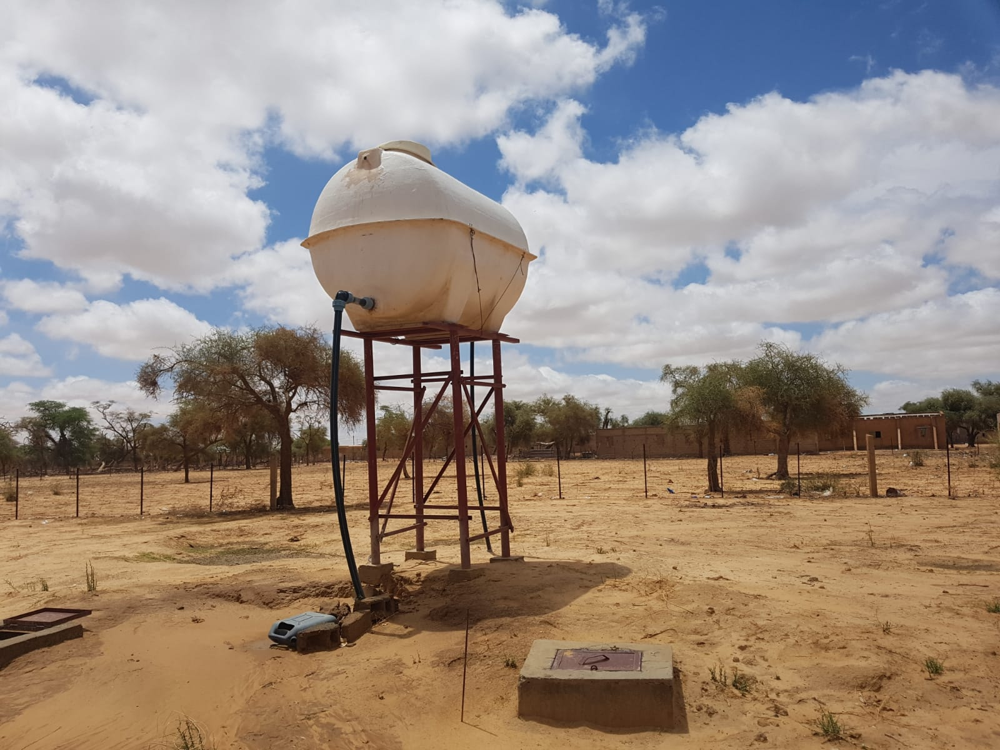

COMMENT NOUS AIDONS ?
Nos projets actuels

Construction d'un forage
Mise en place d'une pompe solaire au sein du jardin maraîcher, en coordination avec les différentes coopératives locales. Cette pompe solaire va permettre aux habitants de cultiver d'avange de fruit et de légume et ce même en période de sécheresse.
Campagne agricole
L’aménagement de la plaine de Boghé vaste d’une superficie de 4000 ha, constitue un centre vital de la localité. Dans le cadre de la campagne agricole et de la lutte à l'autosuffisance alimentaire, SESAD s'est réuni avec les différentes coopératives locales afin de soutenir financièrement, en don de matériels mais aussi en main d'oeuvre les habitants de Sarandogou.